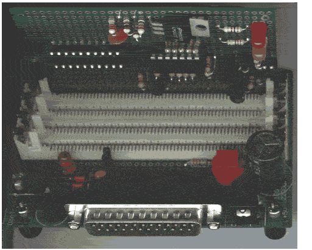
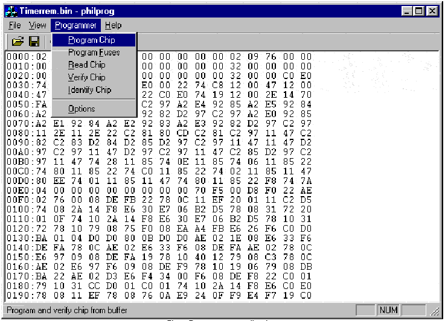

PROGRAMMATEUR DE 87LCP76x:

Prototype du programmateur.
LE PROGRAMMATEUR:
Les microcontrôleurs Philips P87LPC76x sont des composants faible consommation, économiques équipés de 20 pattes et de 4ko ou 2ko de mémoire de programme en version OTP (programmable une seule fois). Il possèdent également 128 octets de RAM, 2 timers 16 bits, 2 comparateurs anlogiques, 1 UART, 1 port IIC, 15 à 18 lignes I/O, fréquence d'horloge jusqu'à 20MHz... bref, un "petit" µC très complet.
Ce programmateur de microcontroleurs de la série 87LPC76x a été créé par Lionel Theunissen (lionelth@big.net.au). Connecté au port parallèle de votre PC, il a l'avantage d'être économique et facilement réalisable. Cependant, contrairement à ce que montre la photo du prototype, je vous recommande si vous destinez ce montage exclusivement à la programmation des µC, de supprimer les connecteurs SIMM de votre réalisation car ils n'ont alors que peu d'intérêts surtout si vous devez les acheter. Si vous voulez comprendre à quoi peuvent servir ces connecteurs visitez le site : http://www.simmstick.com/entries-.htm
Vous trouverez tout ce qu'il vous faut en téléchargeant la documentation (2.5Mo): ssau2005.zip
LE SOFT:

Le programme (Philprog.exe) écrit en langage C fonctionne sous Windows et permet la plupart des opérations de lecture, d'écriture et de vérification des 87LPC764 et 87LPC762.